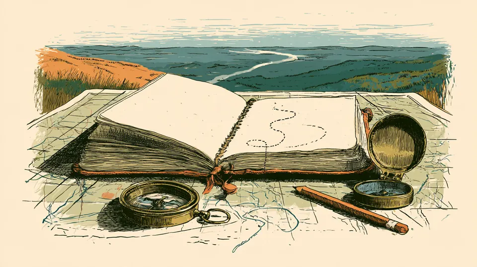

Natural Earth
NO CLOCK
TAKE YOUR TIME

ENDS OF THE EARTH
THE DAILY EXPEDITION
Five prompts. Pin a country. Rarer answers travel further.
NEW LOCATION
Unrolling the map…
Read the prompt
Five a day, the same for everyone.
Pin a country
Tap the map, then drop your pin.
Go further
Answers few would think of carry you further west.
A daily map game about Latter-day Saint history, the scriptures and the lands of the Bible. Five prompts, one pin each. Obvious answers move you a little along the trail; answers few would think of carry you further, from Nauvoo toward the Salt Lake Valley.
Ends of the earth is our top tier: the answer few people would think of. Every prompt has at least one.
Right here in the browser, no account. Read the prompt, tap a country, then press DROP PIN. You get 60 seconds a prompt, or 30 if you choose the shorter clock under Difficulty in the menu.
A family made it to play at home. It is an independent project, not made or endorsed by The Church of Jesus Christ of Latter-day Saints. More on the About page.
There is no unlimited mode. Past week in the menu keeps the last seven days open, and How to play has a practice round that never counts.
At midnight where you are. Everyone gets the same five prompts on the same date. A day played late is logged but does not count toward your streak.
Each answer is ranked by how readily it comes to mind: Home ward 40 km, Stake 55, Mission 70, Isles of the sea 85, Ends of the earth 100. A country that does not fit is a Miss, 0 km.
In camp, open a prompt under The answers and press SHOULD SOMETHING ELSE COUNT?. It writes a note you can copy and pass on. Nothing is sent from the game. Decisions so far are on the Rulings page.
No. It runs in the browser on a phone or a computer.